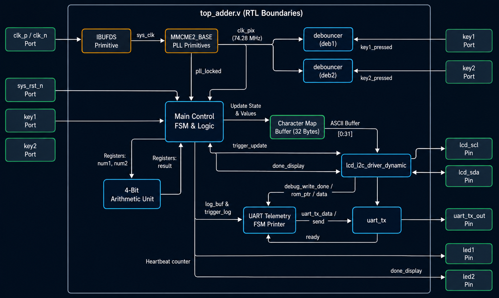
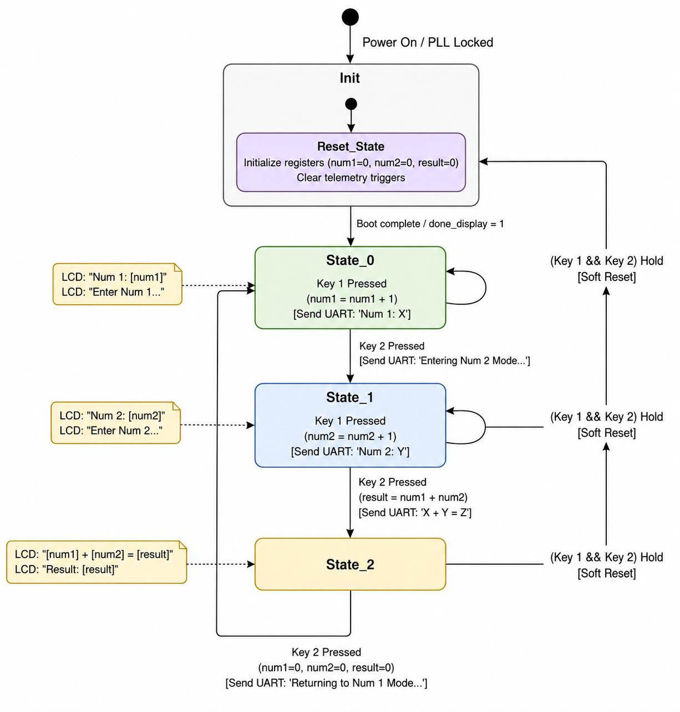
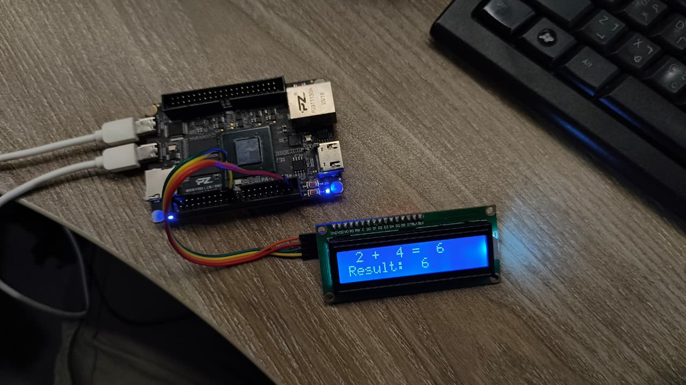
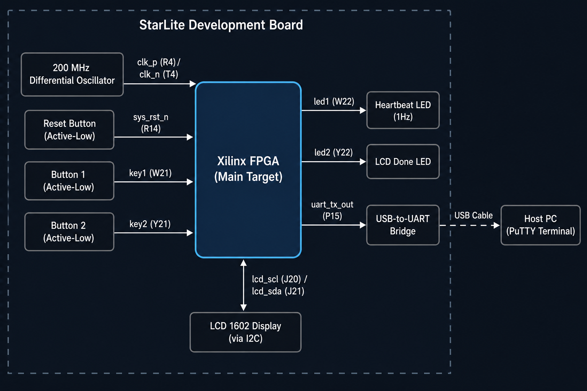
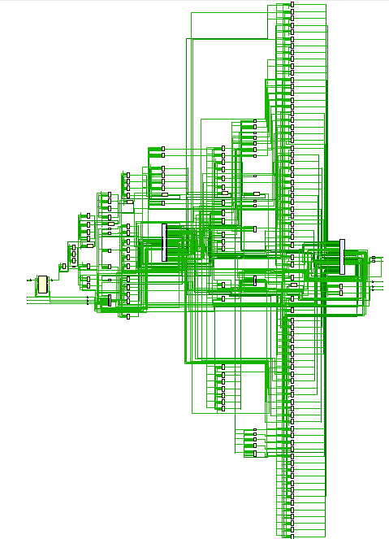
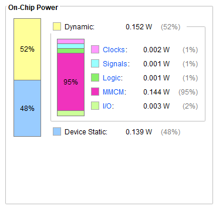
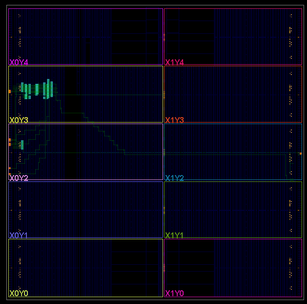

Interactive FPGA Adder
An interactive, hardware-level 4-bit accumulator deployed on the Artix-7 FPGA. Built entirely in synthesizable Verilog HDL, the system incorporates physical button de-bouncing, a 3-state FSM orchestrating data entry and calculation, a custom dynamic I²C LCD driver for a 16×2 character display, and a UART telemetry transmitter that logs every keypress and bus transaction to a host console.
| Target Device | PA-StarLite · Artix-7 XC7A200T (215 K LUTs · 740 DSPs) |
| Toolchain | AMD Vivado 2025.2 (Verilog HDL) |
| Clock System | 200 MHz differential input → 74.28 MHz via MMCME2_BASE PLL |
| Display Interface | Custom Verilog I²C master → 16×2 character LCD (dynamic frame driver) |
| Telemetry Output | UART TX at 115,200 baud — formatted keypress and bus-event log |
| Reset Modes | Active-low hardware reset pin + simultaneous dual-button soft-reset |
| Operand / Result Width | 4-bit inputs (0–15), 8-bit result (0–30) |
Live Demonstration
Physical buttons drive a 3-state Verilog FSM. The 16×2 LCD updates in real time over I²C and every input event is logged as a formatted string through the UART port.
Three-State Operation
Hardware FSM cycles through three states triggered entirely by physical button presses — no software, no CPU:
System Architecture
The top-level module top_adder.v coordinates the full hardware pipeline. The 200 MHz board differential clock is routed through an IBUFDS buffer and synthesized to 74.28 MHz by the MMCME2_BASE PLL. This clock drives all downstream logic simultaneously — debouncers, FSM, I²C driver, and UART transmitter all run as independent concurrent hardware blocks.

Verilog State Machine
A single synchronous always @(posedge clk_pix) block drives all three states. ASCII conversions for the LCD character map are computed combinatorially as wire assignments, so the display buffer always reflects the current register values with zero latency.

// ── Soft-reset: hold both buttons simultaneously ───────────
wire soft_reset = (key1 == 1'b0) && (key2 == 1'b0);
wire sys_rst = !pll_locked || !sys_rst_n || soft_reset;
// ── 3-State accumulator FSM ─────────────────────────────────
always @(posedge clk_pix) begin
if (sys_rst) begin
current_state <= 0;
num1 <= 0; num2 <= 0; result <= 0;
trigger_update <= 0;
end else begin
trigger_update <= 0;
trigger_log <= 0;
case (current_state)
// State 0: Enter Num 1
0: begin
if (key1_pressed) begin
num1 <= num1 + 1;
trigger_update <= 1;
trigger_log <= 1; // UART: "Num 1: X\r\n"
end
if (key2_pressed) begin
current_state <= 1;
num2 <= 0;
trigger_update <= 1;
end
end
// State 1: Enter Num 2
1: begin
if (key1_pressed) begin
num2 <= num2 + 1;
trigger_update <= 1;
trigger_log <= 1; // UART: "Num 2: Y\r\n"
end
if (key2_pressed) begin
current_state <= 2;
result <= num1 + num2;
trigger_update <= 1;
end
end
// State 2: Show result, wait for reset
2: begin
if (key2_pressed) begin
current_state <= 0;
num1 <= 0; num2 <= 0; result <= 0;
trigger_update <= 1;
end
end
endcase
end
endHardware & Results
The design maps cleanly to the Artix-7 fabric. Vivado's timing analyzer confirms complete timing closure with WNS = +8.365 ns against the 74.28 MHz system clock — a comfortable margin. The UART telemetry FSM runs a parallel 29-state sequencer that formats register values, I²C debug data, and acknowledgment bits into human-readable strings logged over the serial console.


Implementation Summary
| Metric | Value |
|---|---|
| System Clock | 74.28 MHz — synthesized via MMCME2_BASE, timing closure achieved |
| Worst Negative Slack | WNS = +8.365 ns — no violations |
| Display Protocol | Custom Verilog I²C master, dynamic 32-character frame writes |
| UART Sequencer | 29-state parallel FSM — formats and transmits human-readable log strings |
| Reset Architecture | Hardware reset pin + simultaneous dual-key soft-reset from any state |
| Bitstream | top_adder.bit — generated by Vivado 2025.2, loaded via TCL script |
Synthesis Results
Post-synthesis outputs from AMD Vivado 2025.2 — RTL schematic, on-chip power breakdown, and FPGA floor plan layout for the top-level top_adder design on the Artix-7 XC7A200T.
RTL Schematic
Vivado-generated post-synthesis schematic showing the full netlist — LUT primitives, carry chains, flip-flops, and I/O buffers mapped from the Verilog source hierarchy.

On-Chip Power Consumption
Total estimated on-chip power is 0.291 W. The MMCM dominates dynamic power at 95% (0.144 W) — expected since the PLL is always active. Logic, signals, and clocks combined consume under 5 mW, confirming the design is extremely resource-efficient.

FPGA Floor Plan Layout
Vivado device floor plan showing the physical placement of synthesized logic across the Artix-7 fabric. The design occupies a compact cluster in the upper-left CLB columns — highlighting how few resources the accumulator actually consumes relative to the 215K LUT capacity of the XC7A200T.

Resource Utilization
| Resource | Used | Available (XC7A200T) | Utilization |
|---|---|---|---|
| LUT | 525 | 134,600 | 0.39 % |
| Flip-Flop (FF) | 324 | 269,200 | 0.12 % |
| BRAM | 0 | 365 | 0 % |
| URAM | 0 | 0 | — |
| DSP | 0 | 740 | 0 % |